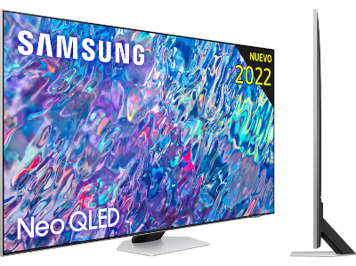

TV LED 55" - Samsung UE55AU7175UXXC
| Tipus de panell | QLED |
|---|---|
| Resolució | 3,840 x 2,160 (4k) |
| Mida de la pantalla | 55" |
| Sèrie | 8 |
| Connectivitat | WiFi, Bluetooth, HDMI, USB |
| Número de ports HDMI | 4 |
| Suporta HDR | Sí |
| Suporta HDR10+ | Sí |
| Color | 100% del volum de color amb Quantum Dot |
- Amb el sistema operatiu Tizen obtindràs una interfície ràpida, fàcil i intuitiva amb els millors continguts i apps
- Suporta HDMI eARC per a poder connectar-se a barres de so o sistemes de home cinema
- Gràcies a Samsung TV Plus podràs veure el millor contingut a la carta
- Descobreix un nou nivell de profunditat i color gràcies al Contrast Enhancer, que analitza cada imatge per crear tonalitats més naturals i realistes